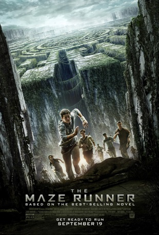
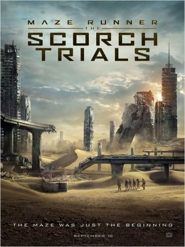
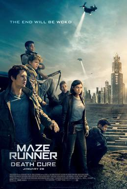

Conheça o elenco
Em um futuro, meio apocalíptico, o jovem Thomas é escolhido para enfrentar o sistema. Ao acordar dentro de um escuro elevador em movimento, ele não consegue se lembrar nem de seu nome. Na comunidade isolada em que foi abandonado, ele conhece outros garotos que passaram pelo mesmo. Para conseguir escapar, Thomas precisa descobrir os sombrios segredos guardados em sua mente e correr muito.
star+ ou youtube
CLASSIFICAÇAO INDICATIVA: +14
81% gostam desse filme, de acordo com as avaliaçoes do google
Wes Ball
ação,ficção científica,mistério
18 de setembro de 2014 (Brasil)

Depois de escapar do labirinto, Thomas e os garotos que o acompanharam em sua fuga encontram uma realidade bem diferente: a superfície da Terra foi queimada pelo Sol e eles precisam lidar com criaturas disformes chamadas Cranks.
star+ ou youtube
CLASSIFICAÇAO INDICATIVA: +14
83% gostam desse filme, de acordo com as avaliaçoes do google
Wes Ball
ação,ficção científica,mistério
1 de setembro de 2015 (Brasil)

Thomas parte em uma missão para encontrar a cura de uma doença mortal e descobre que os planos da C.R.U.E.L podem trazer consequências catastróficas para a humanidade
star+ ou youtube
CLASSIFICAÇAO INDICATIVA: +14
82% gostam desse filme, de acordo com as avaliaçoes do google
Wes Ball
ação,ficção científica,mistério
25 de janeiro de 2018 (Brasil)
Voltar ao topo :)